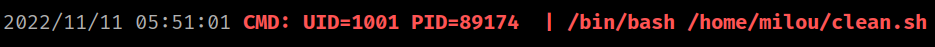
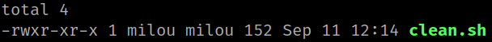
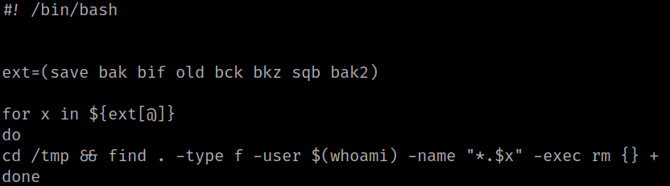
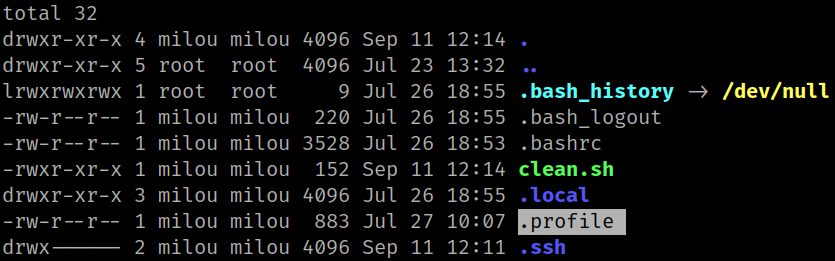
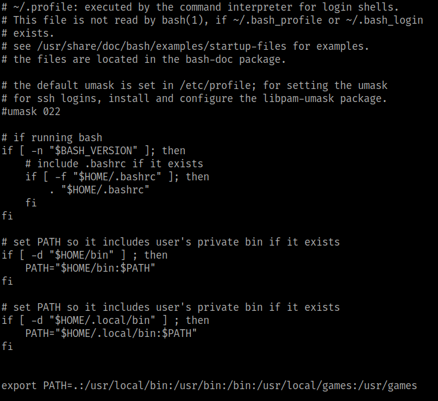

5.1 pspy2 – Unprivileged Linux Process Snooping
“pspy” is a command line tool designed to snoop on processes without need for root permissions. It allows you to see commands run by other users, cron jobs, etc. as they execute. Great for enumeration of Linux systems in CTFs. Also great to demonstrate your colleagues why passing secrets as arguments on the command line is a bad idea. More info here.
1. Download “pspy32” from here.
2. Upload the file from the Kali Machine to “/tmp”.
$ scp -i rita ~/Downloads/pspy32 rita@perlman.hmv:/tmp
3. Go to SSH connection shell.
4. Change “pspy32” privileges.
rita@perlman:~$ cd /tmp
rita@perlman:~$ chmod +x pspy32
5. Run the script.
./pspy32
Output:

After executing the script, we found a python script “clean.sh” which owner is “milou” user.
6. Look at the "home/milou/clean.sh" file.On the SSH connection run the following commands.
rita@perlman:$ cd /home/milou
rita@perlman:/home/milou$ ls -l
rita@perlman:/home/milou$ cat clean.sh
Output:


You can see you can run the file because you don't have permissions.
7. Run the followng commands.
rita@perlman:/home/milou$ ls -al
rita@perlman:/home/milou$ cat .profile
Output:

There's “.profile” file.
